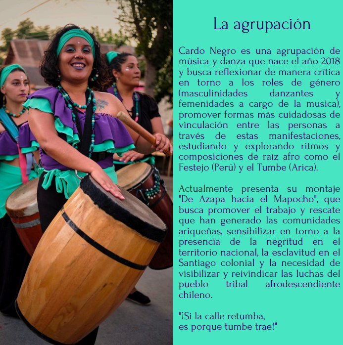
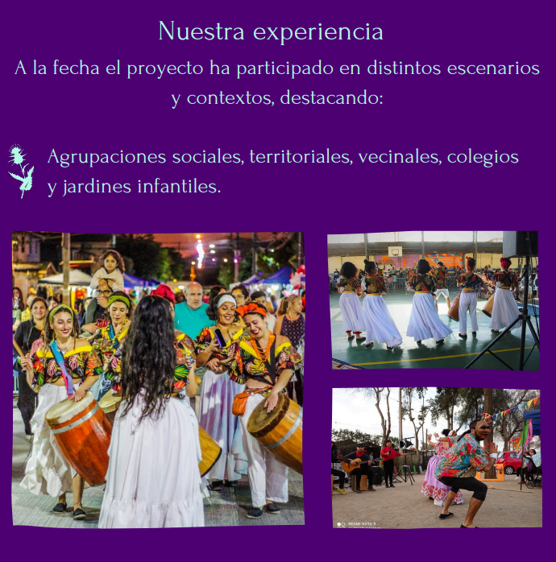
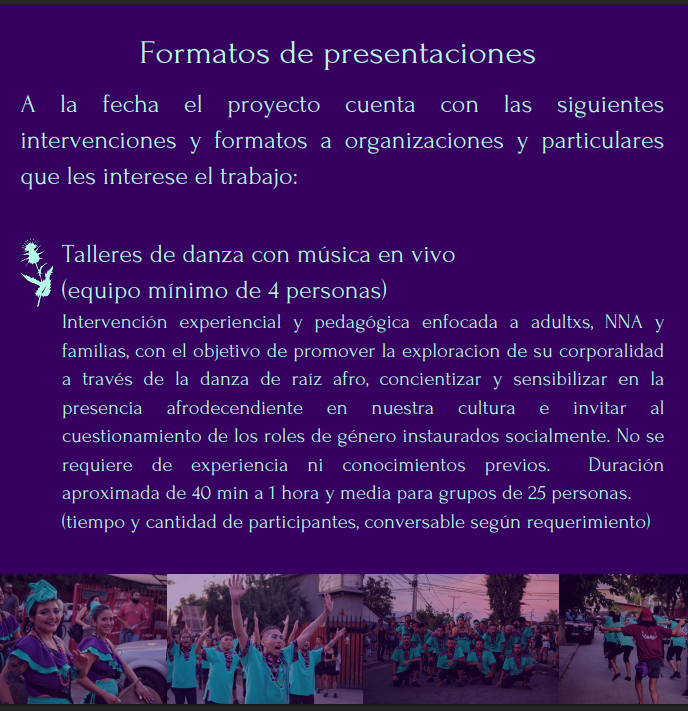
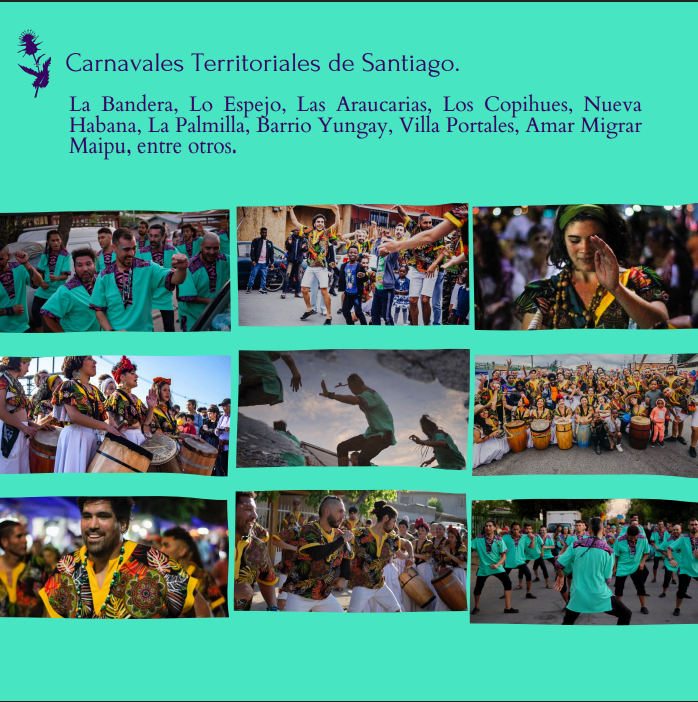
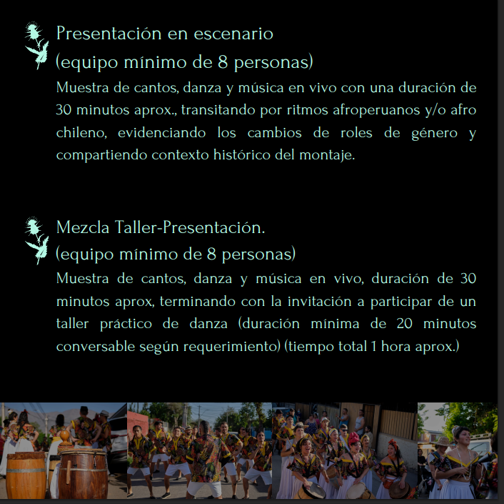

La agrupación

Cardo Negro es una agrupación de música y danza que nace el año 2018 y busca reflexionar de manera crítica en torno a los roles de género (masculinidades danzantes y femineidades a cargo de la música), promover formas más cuidadosas de vinculación entre las personas a través de estas manifestaciones, estudiando y explorando ritmos y composiciones de raíz afro como el Festejo (Perú) y el Tumbe (Arica).
Actualmente presenta su montaje "De Azapa hacia el Mapocho", que busca promover el trabajo y rescate que han generado las comunidades ariqueñas, sensibilizar en torno a la presencia de la negritud en el territorio nacional, la esclavitud en el Santiago colonial y la necesidad de visibilizar y reivindicar las luchas del pueblo tribal afrodescendiente chileno.
"¡Si la calle retumba, es porque tumbe trae!"
Nuestra experiencia

A la fecha el proyecto ha participado en distintos escenarios y contextos, destacando:
- Agrupaciones sociales, territoriales, vecinales, colegios y jardines infantiles.
Centros Culturales y festivales

- Corporación Cultural de Recoleta
- Centro Cultural Tio Lalo Parra, Cerrillos.
- Festival Womad, 2024
- Centro Gabriela Mistral (GAM).
- Inauguración Juegos Panamericanos 2023
- Centro Cultural Paine
- Fondas Parque O'Higgins
Formatos de presentaciones


A la fecha el proyecto cuenta con las siguientes intervenciones y formatos a organizaciones y particulares que les interese el trabajo:
- Talleres de danza con música en vivo (equipo mínimo de 4 personas)
Intervención experiencial y pedagógica enfocada a adultxs, NNA y familias, con el objetivo de promover la exploración de su corporalidad a través de la danza de raíz afro, concientizar y sensibilizar en la presencia afrodescendiente en nuestra cultura e invitar al cuestionamiento de los roles de género instaurados socialmente. No se requiere de experiencia ni conocimientos previos. Duración aproximada de 40 min a 1 hora y media para grupos de 25 personas. (tiempo y cantidad de participantes, conversable según requerimiento) - Presentación en escenario (equipo mínimo de 8 personas)
Muestra de cantos, danza y música en vivo con una duración de 30 minutos aprox., transitando por ritmos afroperuanos y/o afro chileno, evidenciando los cambios de roles de género y compartiendo contexto histórico del montaje. - Mezcla Taller-Presentación (equipo mínimo de 8 personas)
Muestra de cantos, danza y música en vivo, duración de 30 minutos aprox, terminando con la invitación a participar de un taller práctico de danza (duración mínima de 20 minutos conversable según requerimiento) (tiempo total 1 hora aprox.)
Links
